Publicare nu înseamnă responsabilizare
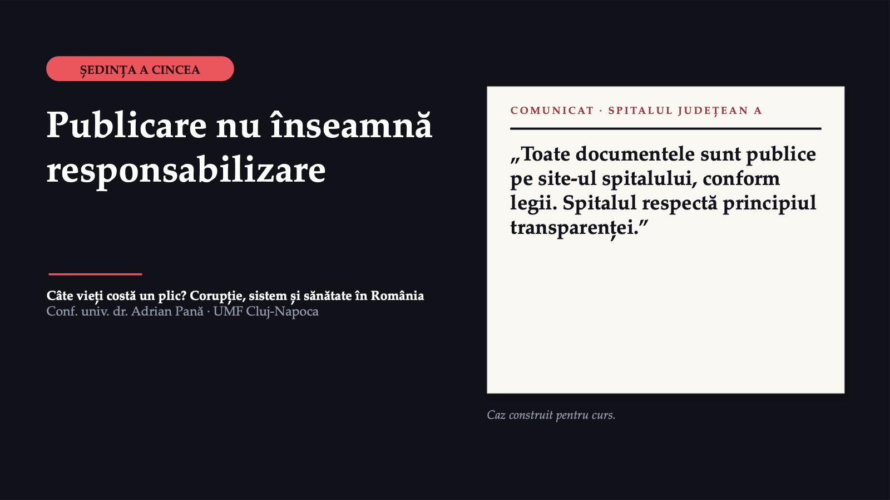
1 / 43Publicare nu înseamnă responsabilizare. Azi urmărim un singur caz, de la un articol de ziar până la un comitet convocat de consiliul județean, și ne întrebăm la fiecare pas: după ce un document a fost publicat, cine răspunde și cine verifică? Pornim de la comunicatul de pe ecran: un spital care spune că a publicat tot.
Un articol scris numai din documentele spitalului
![ACTUL 1 · CAZ CONSTRUIT Un articol scris numai din documentele spitalului Caz construit pentru curs; detaliile sunt plauzibile, nu reale. DOCUMENTUL 1 · PE SITE-UL SPITALULUI Lista contractelor de achiziție din anul trecut Firma C a câștigat trei contracte de materiale sanitare consumabile. DOCUMENTUL 2 · PE SITE-UL SPITALULUI Declarația de interese a șefei comisiei de achiziții Soțul ei este asociat în firma C. Luni dimineață, o jurnalistă dintr-un ziar local pune cele două documente alături. Spitalul Județean A, Județul B și firma C nu există.](diapozitive/C05/002.jpg) 2 / 43
2 / 43Cazul de azi este construit pentru curs; detaliile sunt plauzibile, nu reale. Luni dimineață, o jurnalistă dintr-un ziar local publică un articol scris numai pe baza a două documente pe care Spitalul Județean A le-a pus singur pe site. Primul este lista contractelor de achiziție din anul trecut. Al doilea este declarația de interese a șefei comisiei de achiziții: soțul ei este asociat într-o firmă, firma C. Din listă reiese că firma C a câștigat trei contracte de materiale sanitare consumabile.
Comunicatul de două rânduri
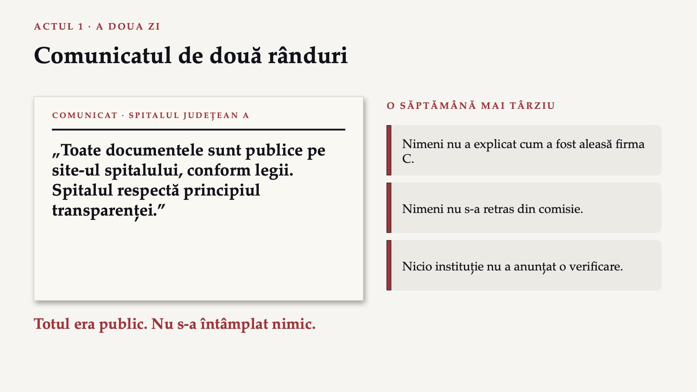
3 / 43Spitalul răspunde a doua zi printr-un comunicat de două rânduri: toate documentele sunt publice pe site, conform legii, iar spitalul respectă principiul transparenței. După o săptămână nu s-a mai întâmplat nimic: nimeni nu a explicat cum a fost aleasă firma C, nimeni nu s-a retras din comisie, nicio instituție nu a anunțat o verificare. Rețineți formula: totul era public și nu s-a întâmplat nimic. Prima decizie a ședinței pleacă de aici: a fost publicarea suficientă?
Un caz, trei acte, un comitet
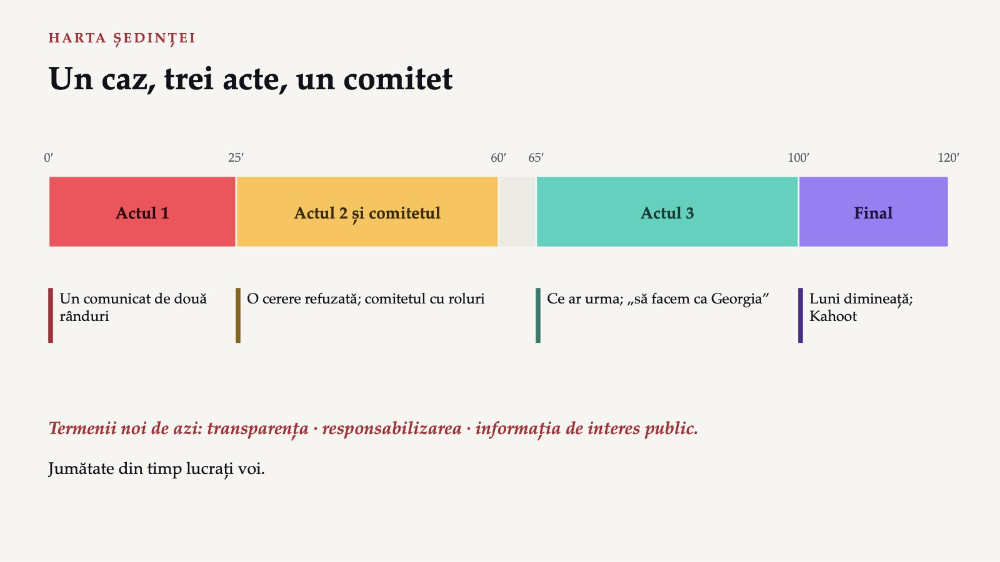
4 / 43Un caz, trei acte și un comitet. În primul act, comunicatul. În al doilea, trei studenți cer o informație și primesc un refuz; apoi deveniți voi comitetul. După o scurtă oprire, al treilea act: ce ar urma și o propunere care sună bine, „să facem ca Georgia”. Jumătate din timp lucrați voi: votați, vă convingeți colegii în chat, jucați un rol și propuneți măsuri.
Comunicatul spune că totul este public. A fost suficient?
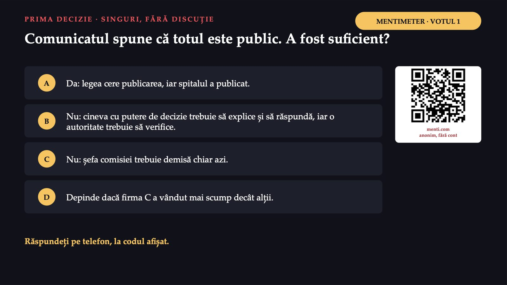
5 / 43Prima decizie. Votați singuri, fără să vă uitați la colegi. Ați văzut comunicatul: spitalul spune că toate documentele sunt publice, conform legii, și că respectă principiul transparenței. Întrebarea este simplă: a fost suficient? Alegeți una dintre cele patru variante; rezultatele rămân ascunse până după al doilea vot.
Comunicatul spune că totul este public. A fost suficient?
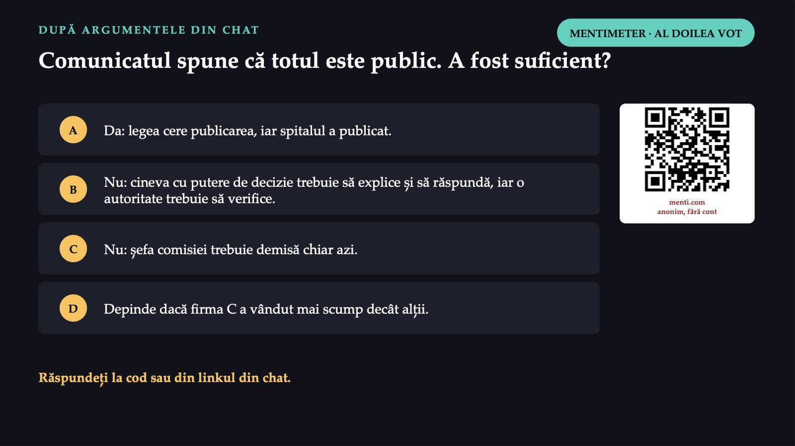
6 / 43Scrieți în chat argumentul vostru, într-o frază, și răspundeți colegului care a votat altfel. Sprijiniți-vă pe caz: ce a publicat spitalul și ce s-a întâmplat, sau nu s-a întâmplat, după o săptămână. Apoi votați din nou, pe aceleași variante.
Ce s-a schimbat după discuție?
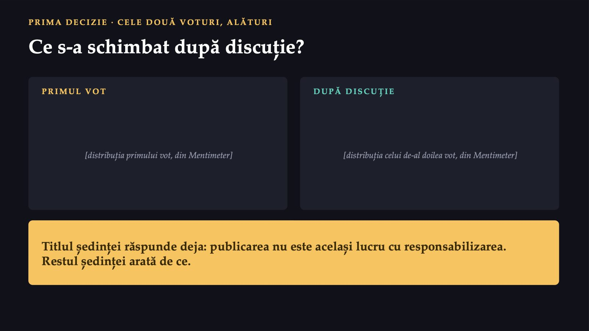
7 / 43Iată cele două voturi, unul lângă altul. Titlul ședinței răspunde deja la întrebare, iar răspunsul vi-l datorăm de la început: publicarea nu este același lucru cu responsabilizarea. Spitalul din caz a publicat tot ce trebuia, și totuși nimeni nu a răspuns pentru nimic. Restul ședinței arată de ce se întâmplă asta și ce puteți face voi, ca cetățeni și ca viitori medici.
Transparența
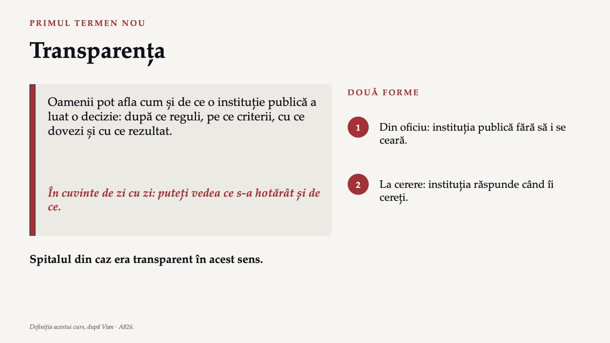
8 / 43Primul termen nou: transparența. În acest curs, transparența înseamnă că oamenii pot afla cum și de ce o instituție publică a luat o decizie: după ce reguli, pe ce criterii, cu ce dovezi și cu ce rezultat. În cuvinte de zi cu zi: puteți vedea ce s-a hotărât și de ce. Are două forme: instituția publică din oficiu, fără să i se ceară, sau răspunde când îi solicitați. Taryn Vian scrie că, în practică, transparența înseamnă adesea accesul la informație. În acest sens, spitalul din caz a fost transparent.
Spitalul a publicat ce trebuia
 9 / 43
9 / 43Spitalul nu a publicat din generozitate. Legea îi cere fiecărei instituții publice să comunice din oficiu, între altele, bugetul și bilanțul contabil și să publice, actualizat anual, un buletin informativ. Pentru declarațiile de interese există o lege separată, cea a integrității: instituția le afișează pe pagina ei de internet în cel mult 30 de zile de la primire și le păstrează acolo pe durata funcției și încă 3 ani după. Comunicatul are deci dreptate într-un punct: obligațiile de publicare au fost respectate.
Publicarea nu era singura obligație
 10 / 43
10 / 43Numai că publicarea nu era singura obligație. Legea achizițiilor publice îi cere spitalului, ca autoritate contractantă, să ia, pe parcursul procedurii, toate măsurile necesare pentru a preveni, identifica și remedia conflictele de interese. Dacă printre cei care evaluează ofertele este o persoană care poate avea un interes financiar, spitalul trebuie să stabilească dacă este un conflict și să îl înlăture, de pildă prin înlocuirea evaluatorului. În cazul nostru, declarația a fost publicată, dar nimeni din spital nu a comparat-o cu lista ofertanților.
Responsabilizarea
 11 / 43
11 / 43Al doilea termen nou: responsabilizarea. În acest curs, ea înseamnă obligația celor care au putere de decizie de a-și explica deciziile, de a le face înțelese și de a-și asuma urmările lor. În cuvinte de zi cu zi: cineva trebuie să dea socoteală și poate suporta o consecință. Diferența dintre cele două termene este chiar titlul ședinței. Vian o spune într-o frază: transparența este o condiție necesară, dar nu suficientă, pentru responsabilizare. Necesară, pentru că nu poți cere socoteală pentru ce nu știi. Nesuficientă, pentru că a ști nu obligă pe nimeni să răspundă.
din oficiu
 12 / 43
12 / 43Cine ar fi trebuit să verifice? Legea integrității dă acest rol unei autorități din afara spitalului, Agenția Națională de Integritate. Agenția evaluează declarațiile de avere și de interese, incompatibilitățile și conflictele de interese. Poate începe evaluarea din oficiu sau la sesizarea oricărei persoane. Dacă la capătul procedurii se constată conflictul de interese, persoana este decăzută pe 3 ani din dreptul de a mai exercita o asemenea funcție. În cazul nostru, după o săptămână nimeni nu trimisese o sesizare, iar Agenția nu anunțase nicio verificare. Faptul că documentele erau publice nu a pus, singur, pe nimeni în mișcare.
Varianta (B)
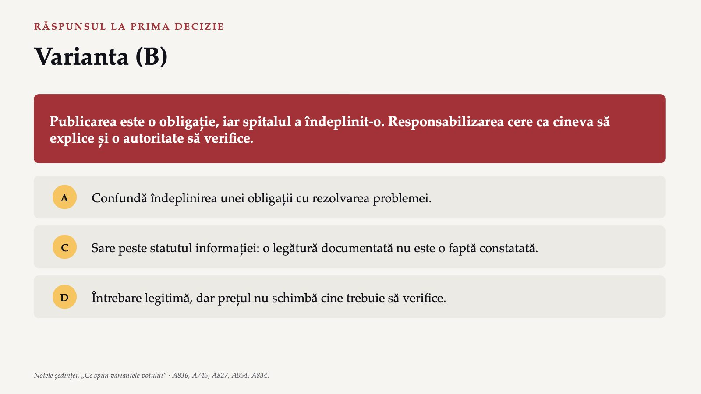
13 / 43Varianta documentată este (B). Publicarea este o obligație legală, iar spitalul a îndeplinit-o, dar ea nu încheie nimic: responsabilizarea cere ca cineva cu putere de decizie să explice și ca o autoritate să verifice. Varianta (A) confundă îndeplinirea unei obligații cu rezolvarea problemei. Varianta (C) sare peste statutul informației: articolul arată o legătură documentată, nu o faptă constatată; conflictul de interese îl constată Agenția, la capătul unei proceduri, iar legea achizițiilor dă ca măsură înlocuirea evaluatorului, nu demiterea. Varianta (D) pune o întrebare legitimă, dar prețul nu schimbă cine trebuie să verifice; și, cum veți vedea, prețul pe bucată nu era pe site.
Prețul pe bucată
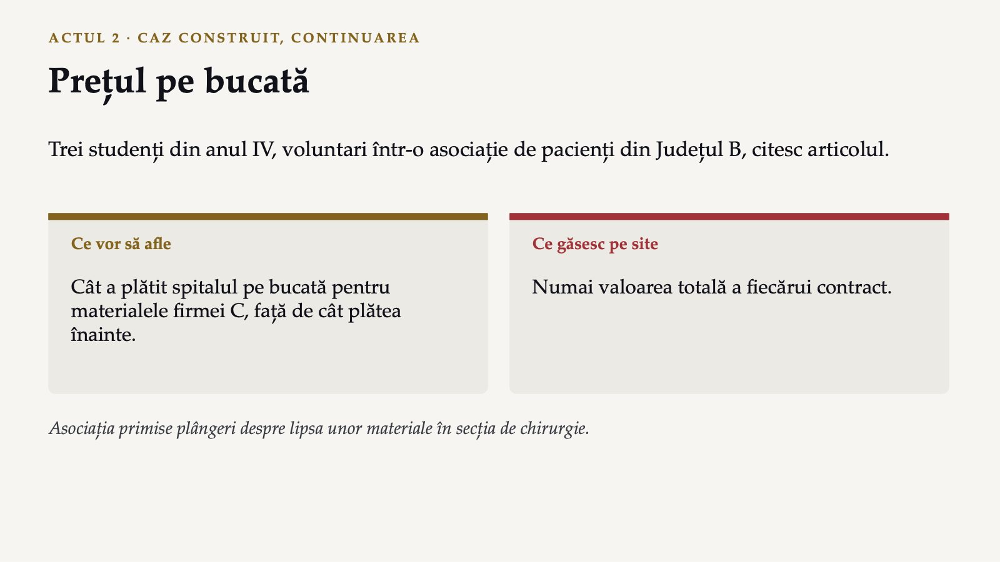
14 / 43Al doilea act, continuarea cazului. Trei studenți din anul IV, voluntari într-o asociație de pacienți din Județul B, citesc articolul. Asociația primise plângeri despre lipsa unor materiale în secția de chirurgie, iar studenții vor să afle un lucru simplu: cât a plătit spitalul pe bucată pentru materialele de la firma C, față de cât plătea înainte. Lista publicată dă numai valoarea totală a fiecărui contract. Informația pe care o caută nu este pe site, deci trebuie cerută. Trecem astfel de la prima formă a transparenței, publicarea din oficiu, la a doua: răspunsul la cerere.
O cerere scrisă, un răspuns de un rând
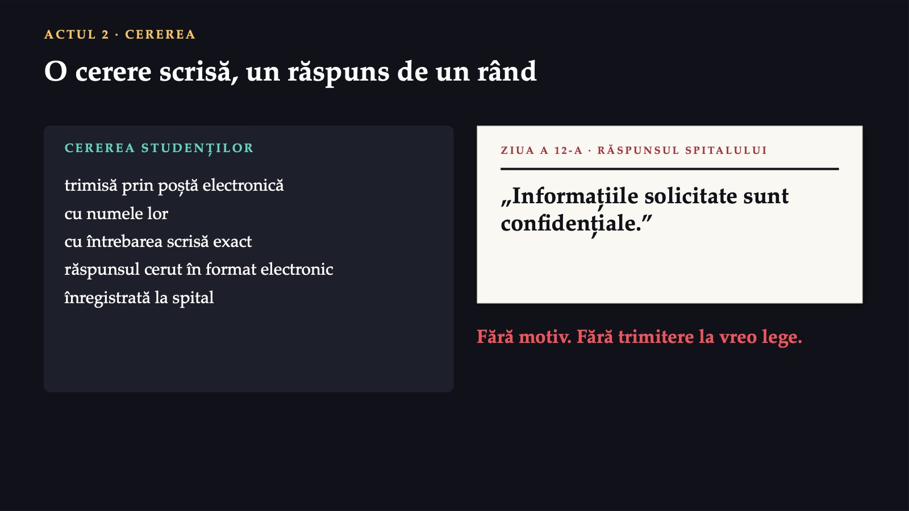
15 / 43Studenții trimit spitalului, prin poștă electronică, o cerere de informații de interes public, cu numele lor, cu întrebarea scrisă exact și cu mențiunea că vor răspunsul în format electronic. Cererea este înregistrată. În ziua a 12-a de la înregistrare primesc un răspuns de un rând: „Informațiile solicitate sunt confidențiale.” Fără motiv, fără trimitere la vreo lege. Cererea are elementele unei cereri bine scrise: cine cere, ce anume și în ce format. Ca să judecăm răspunsul spitalului, avem nevoie de al treilea termen nou.
Informația de interes public
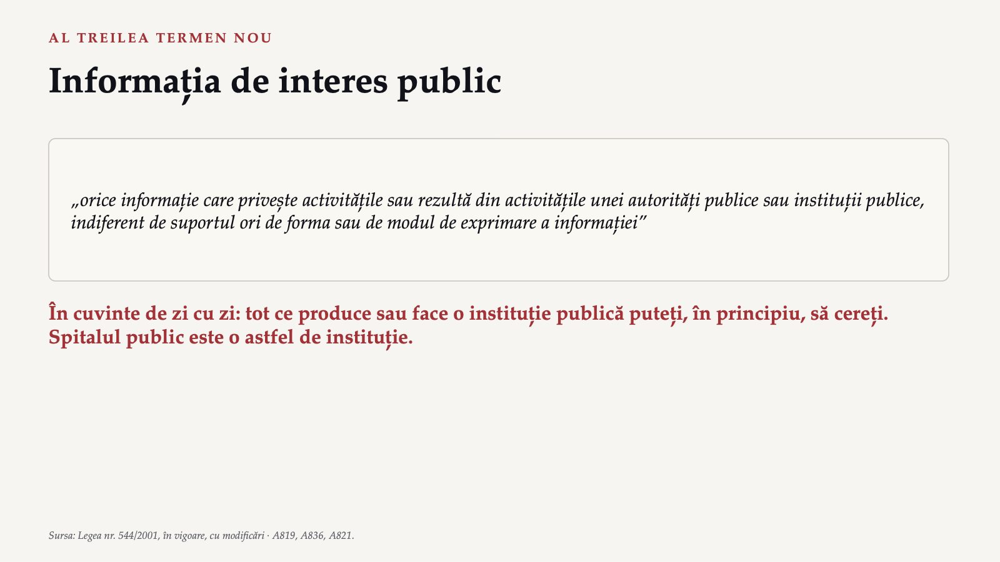
16 / 43Al treilea termen nou: informația de interes public. Legea liberului acces la informații o definește ca orice informație care privește activitățile sau rezultă din activitățile unei autorități ori instituții publice, indiferent de forma ei. În cuvinte de zi cu zi: tot ce produce sau face o instituție publică puteți, în principiu, să solicitați. Legea nr. 544/2001 are aproape un sfert de secol, dar este în vigoare, cu modificări, și leagă cele două forme ale transparenței: ce trebuie publicat din oficiu și ce puteți cere când nu găsiți. Cererea studenților este a doua formă.
Termenele, pe o cronologie
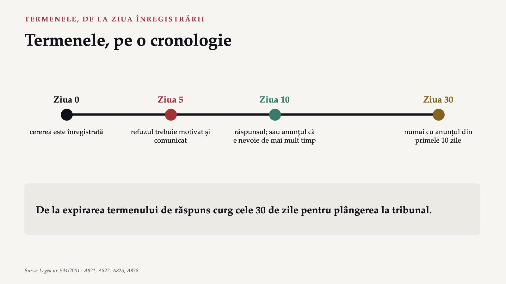
17 / 43De termene depinde ce puteți face după un refuz. Iată-le pe cererea studenților, de la ziua înregistrării. Ziua 0: cererea este înregistrată; de aici curg toate termenele. Dacă spitalul refuză, refuzul trebuie motivat și comunicat în 5 zile. Spitalul răspunde în scris în 10 zile; dacă are nevoie de mai mult timp, trebuie să vă anunțe în scris tot în aceste 10 zile. Numai cu acest anunț poate răspunde în cel mult 30 de zile de la înregistrare. De la expirarea termenului de răspuns curg cele 30 de zile pentru plângerea la tribunal.
În ziua a 12-a: „Informațiile solicitate sunt confidențiale.” Ce fac studenții acum?
 18 / 43
18 / 43A doua decizie. Votați singuri, fără discuție. Studenții au trimis o cerere scrisă, înregistrată la spital, iar în ziua a 12-a primesc un singur rând: „Informațiile solicitate sunt confidențiale.” Fără motiv și fără trimitere la vreo lege. Gândiți-vă la termenele pe care tocmai le-ați văzut. Ce fac studenții acum?
În ziua a 12-a: „Informațiile solicitate sunt confidențiale.” Ce fac studenții acum?
 19 / 43
19 / 43Scrieți în chat argumentul vostru, într-o frază, și răspundeți colegului care a votat altfel. Sprijiniți-vă pe cronologia termenelor, de la ziua înregistrării cererii. Apoi votați din nou, pe aceleași variante.
Varianta (B)
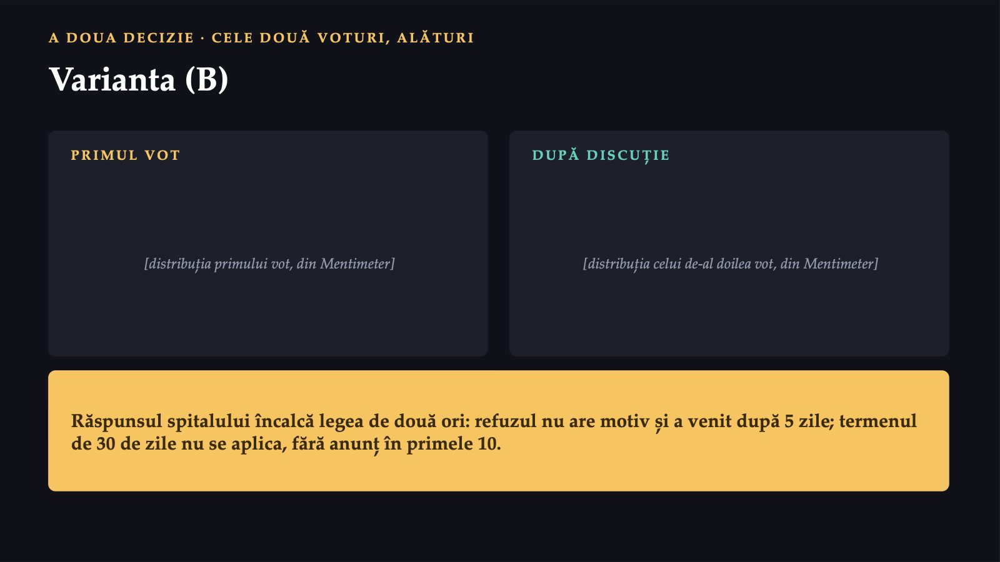
20 / 43Iată cele două voturi, alături. Varianta documentată este (B). Răspunsul spitalului încalcă legea de două ori. Un refuz trebuia motivat și comunicat în 5 zile de la primirea cererii; spitalul a răspuns în ziua a 12-a, fără niciun motiv. Termenul de 30 de zile nu îl putea folosi, pentru că nu i-a anunțat pe studenți, în primele 10 zile, că are nevoie de mai mult timp. Varianta (A) folosește deci un termen care nu se aplica. Varianta (C) confundă un refuz de informații cu o faptă de corupție: legea dă pentru refuz alte căi. Varianta (D) poate aduce atenție, dar repetă primul act: o publicare fără un destinatar obligat să răspundă.
Două căi, fiecare cu termenul ei
![CE FACEȚI CÂND RĂSPUNSUL E UN REFUZ Două căi, fiecare cu termenul ei Reclamația la conducătorul instituției O plângere scrisă către manager, în 30 de zile de la refuz. Dacă e întemeiată, răspunsul vine în 15 zile, cu informațiile și cu sancțiunile luate. Plângerea la tribunal La secția care judecă litigiile cu instituțiile publice, în 30 de zile de la expirarea termenului de răspuns. Judecată de urgență, fără taxă. Refuzul nemotivat este o abatere: angajatul care a refuzat răspunde disciplinar. Sursa: Legea nr. 544/2001 · A824, A825, A821.](diapozitive/C05/021.jpg) 21 / 43
21 / 43Legea dă două căi, fiecare cu termenul ei. Prima este reclamația la conducătorul instituției, adică la managerul spitalului: o plângere scrisă împotriva refuzului, în 30 de zile de la data la care ați aflat de el. Dacă se dovedește întemeiată, răspunsul vine în 15 zile și cuprinde atât informațiile cerute, cât și sancțiunile disciplinare luate. A doua este plângerea la tribunal, la secția care judecă litigiile cu instituțiile publice, în 30 de zile de la expirarea termenului de răspuns. Instanța poate obliga spitalul să dea informațiile și să plătească daune; plângerea se judecă de urgență și nu se plătește taxă de timbru.
Reclamația, imediat; data-limită, notată
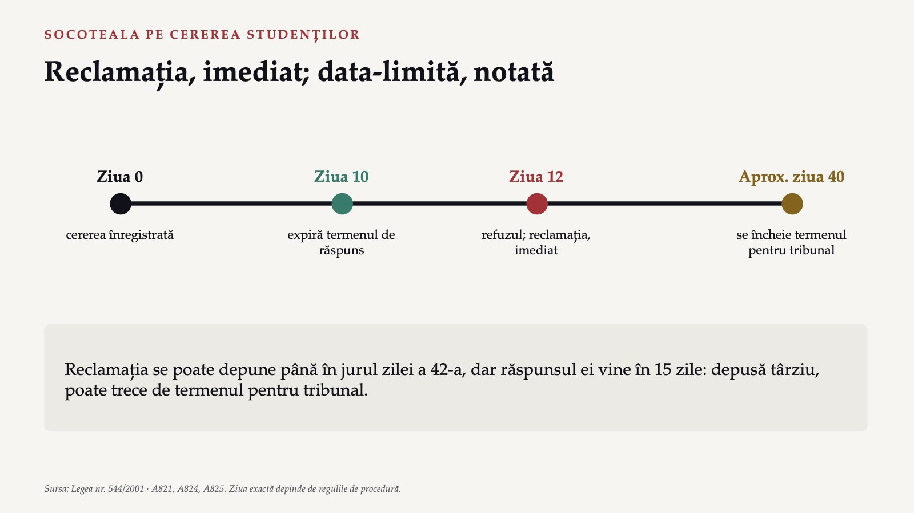
22 / 43Pe cererea studenților, socoteala este următoarea. Spitalul nu i-a anunțat că are nevoie de mai mult timp, deci termenul lui de răspuns s-a încheiat în ziua a 10-a. Cele 30 de zile pentru tribunal se socotesc de la expirarea acestui termen, deci se încheie la aproximativ 40 de zile de la înregistrarea cererii. Reclamația se poate depune până în jurul zilei a 42-a, iar răspunsul la ea poate veni în 15 zile de la depunere. Dacă e depusă târziu, răspunsul poate veni după ce termenul pentru tribunal a trecut. De aceea studenții depun reclamația imediat și își notează din prima zi data-limită pentru tribunal.
Unde legea nu se mulțumește cu publicarea
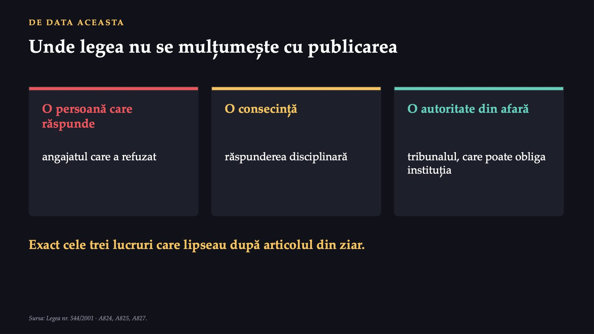
23 / 43Observați cum arată aici responsabilizarea, spre deosebire de primul act. Legea nu se mulțumește cu publicarea: numește o persoană care răspunde, angajatul care a refuzat; o consecință, răspunderea disciplinară; și o autoritate din afară care poate obliga instituția, tribunalul. Exact cele trei lucruri care lipseau după articolul din ziar. Responsabilizarea are deci trei elemente: o persoană care răspunde, o consecință și o autoritate din afară. Le vom căuta din nou în comitet, la fiecare variantă de măsură.
O excepție se invocă în scris
![PUTEA SPITALUL SĂ REFUZE? O excepție se invocă în scris Informațiile comerciale sau financiare sunt exceptate „dacă publicitatea acestora aduce atingere dreptului de proprietate intelectuală ori industrială, precum și principiului concurenței loiale”. 1 Aceeași lege cere ca orice autoritate contractantă să pună la dispoziție contractele de achiziții publice. 2 O excepție trebuia invocată și motivată în scris, în 5 zile. 3 Dacă excepția se aplică prețurilor plătite din bani publici decide, la plângere, instanța. Sursa: Legea nr. 544/2001 · A837, A835, A822.](diapozitive/C05/024.jpg) 24 / 43
24 / 43Mai rămâne o întrebare: putea spitalul să refuze? Legea enumeră informațiile exceptate de la accesul liber. Una dintre excepții privește informațiile despre activitățile comerciale sau financiare, dacă publicitatea lor aduce atingere dreptului de proprietate intelectuală ori industrială, precum și principiului concurenței loiale. Aceeași lege prevede însă că orice autoritate contractantă pune la dispoziția celui interesat contractele de achiziții publice. Iar o excepție trebuia invocată în scris, în 5 zile. Dacă ea se aplică unor prețuri plătite din bani publici o decide, la plângere, instanța; notele nu răspund în locul ei.
Scrieți cererea studenților
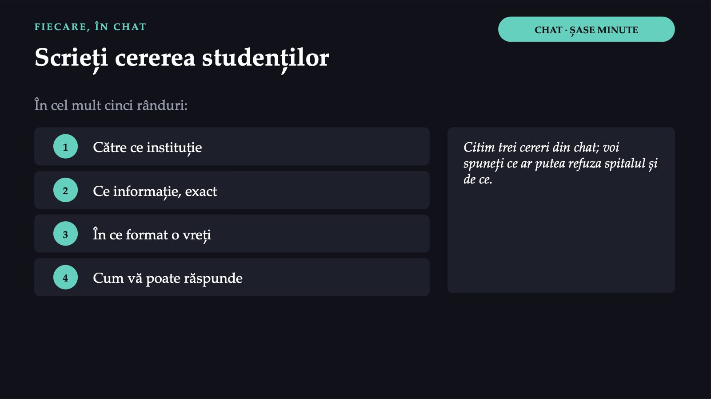
25 / 43Fiecare, în chat: scrieți cererea studenților, în cel mult cinci rânduri. Ce instituție, ce informație exact, în ce format o vreți, cum vă poate răspunde. Citim apoi trei cereri din chat, iar ceilalți spun, tot în chat, ce ar putea refuza spitalul și de ce.
Ce se schimbă, cine răspunde, cine verifică?
![INSTRUMENTUL ȘEDINȚEI · COMITETUL CU ROLURI Ce se schimbă, cine răspunde, cine verifică? Consiliul Județean B, care are spitalul în subordine, convoacă un comitet după articol și după refuzul primit de studenți. 1 Managerul spitalului 2 Jurnalista 3 Reprezentanta asociației de pacienți 4 Consilierul de integritate 5 Reprezentantul consiliului județean 6 Medicul-șef al chirurgiei Votați din rolul vostru, nu din convingerea voastră. Fișele de rol sunt pe pagina ședinței, în Pregătire. Caz construit pentru curs; instituțiile și persoanele sunt inventate.](diapozitive/C05/026.jpg) 26 / 43
26 / 43Consiliul Județean B, care are spitalul în subordine, convoacă un comitet după articol și după refuzul primit de studenți. În ședință sunt cele șase roluri din fișele publicate înainte de ședință: managerul spitalului, jurnalista, reprezentanta asociației de pacienți, consilierul de integritate, reprezentantul consiliului județean și medicul-șef al secției de chirurgie. Votați din rolul vostru, nu din convingerea voastră. Întrebarea comitetului: ce se schimbă după publicare, cine răspunde și cine verifică?
Luna voastră, rolul vostru
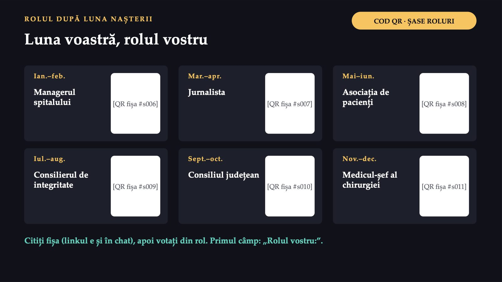
27 / 43Rolul vostru depinde de luna nașterii: ianuarie–februarie, managerul spitalului; martie–aprilie, jurnalista; mai–iunie, asociația de pacienți; iulie–august, consilierul de integritate; septembrie–octombrie, consiliul județean; noiembrie–decembrie, medicul-șef al chirurgiei. Deschideți fișa rolului vostru prin codul de pe ecran sau din linkul din chat. Citiți-o, apoi votați din rol; primul câmp este rolul vostru. Fișele sunt publicate și pe pagina ședinței, în Pregătire.
Ce măsură adoptă comitetul?
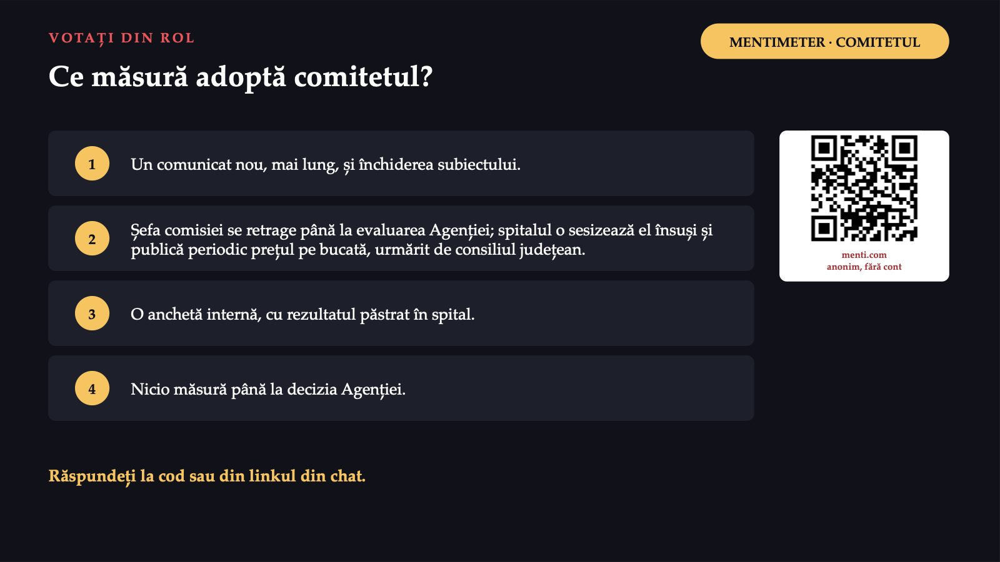
28 / 43Votați din rolul vostru, nu din convingerea voastră: ce măsură adoptă comitetul? Primul câmp este rolul. Gândiți-vă ce are de pierdut personajul vostru, pentru că în fișe fiecare personaj are ceva de pierdut. După vot, câte un reprezentant al fiecărui rol scrie în chat, cu numele rolului în față, de ce a ales astfel.
Cine răspunde și cine verifică?
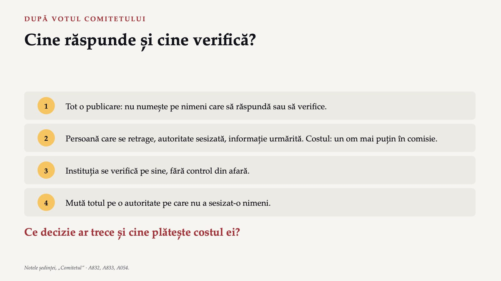
29 / 43Votul acesta nu are o singură variantă bună. Are însă o întrebare de control, aceeași pentru fiecare variantă: cine răspunde și cine verifică? Comunicatul nou este tot o publicare. Ancheta internă cu rezultatul păstrat în spital numește pe cineva care verifică, dar instituția se verifică pe sine. Așteptarea deciziei Agenției mută totul pe o autoritate pe care, după o săptămână, nu o sesizase nimeni. Varianta a doua pune laolaltă o persoană care se retrage, o autoritate sesizată și o informație urmărită de consiliu; are și un cost: comisia rămâne cu un om mai puțin, iar medicul-șef se teme de întârzieri. Ce decizie ar trece și cine plătește costul ei? O măsură care nu costă pe nimeni nimic este, de obicei, încă un comunicat.
Cinci minute
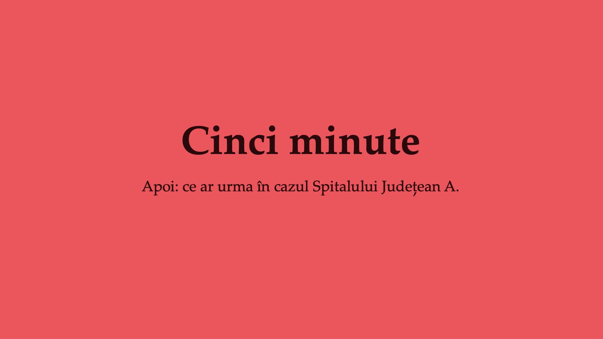
30 / 43Ne oprim puțin. Când reluăm, vedem ce ar putea urma în cazul Spitalului Județean A, două luni mai târziu, și comparăm deznodământul cu voturile voastre.
Două luni mai târziu
![ACTUL 3 · CE AR URMA, PLAUZIBIL Două luni mai târziu Caz construit pentru curs; deznodământul este plauzibil, nu real. 1 Managerul adoptă varianta 2: retragerea din comisie, sesizarea Agenției, prețurile publicate periodic. 2 Studenții depun reclamația imediat. Primesc prețurile în 15 zile, înainte de termenul pentru tribunal; autoarea răspunsului a fost sancționată. 3 Firma C nu a vândut mai scump. Evaluarea Agenției este încă în curs. 4 Cererea medicului-șef pentru alt tip de mănuși nu ajunsese niciodată la comisie.](diapozitive/C05/031.jpg) 31 / 43
31 / 43Două luni mai târziu; deznodământul este construit, plauzibil, nu real. La cererea consiliului județean, managerul adoptă varianta cu retragerea temporară din comisie, sesizarea Agenției Naționale de Integritate și publicarea periodică a prețurilor pe bucată. Studenții depun reclamația la manager imediat după refuz și primesc prețurile în 15 zile, înainte de termenul pentru tribunal, împreună cu explicația că persoana care a redactat răspunsul de un rând a fost sancționată disciplinar. Prețurile arată că firma C nu a vândut mai scump. Evaluarea Agenției este încă în curs. Iar medicul-șef al chirurgiei află, în sfârșit, că cererea lui pentru alt tip de mănuși nu ajunsese niciodată la comisie.
Articolul a arătat. Instituțiile au mișcat.
![CE A PORNIT PROCESUL Articolul a arătat. Instituțiile au mișcat. 1 Tribunalul, la care studenții puteau merge. 2 Managerul, obligat să răspundă la reclamație. 3 Agenția, odată sesizată. 4 Consiliul județean, care a cerut rapoarte periodice. Și cineva a urmărit termenele. Prețurile erau în regulă, dar cererea unui medic se pierduse: lipsea un circuit în care cineva să citească și să răspundă. Articolul singur nu a schimbat nimic într-o săptămână. Sursa: Legea nr. 544/2001; Legea nr. 176/2010 · A824, A825, A054.](diapozitive/C05/032.jpg) 32 / 43
32 / 43Observați ce a pornit procesul și ce nu. Articolul a pus documentele în fața tuturor, dar, singur, nu a schimbat nimic într-o săptămână. Lucrurile s-au mișcat abia când au intrat în joc instituții care aveau obligația să acționeze: tribunalul, la care studenții puteau merge; managerul, obligat să răspundă la reclamație; Agenția, odată sesizată; consiliul județean, care a cerut rapoarte periodice. Și s-au mișcat pentru că cineva a urmărit termenele. A mai ieșit la iveală ceva: prețurile erau în regulă, dar cererea unui medic se pierduse în spital. Publicarea exista; lipsea un circuit în care cineva să citească și să răspundă.
Unde ați avut dreptate și unde nu
 33 / 43
33 / 43La primul vot, varianta (A), „spitalul a publicat, deci e suficient”, este exact poziția comunicatului. Dacă o parte dintre voi a ales-o, nu este o greșeală de înțelegere, ci un reflex instituțional obișnuit. Varianta (C), demiterea imediată, ar fi dus la o decizie pe care deznodământul nu o justifică: prețurile erau în regulă, iar evaluarea conflictului de interese nu s-a încheiat. Aici se vede de ce contează statutul informației. La al doilea vot, varianta (A) ar fi dus la o așteptare inutilă, pe un termen care nu se aplica. Varianta (B) este cea pe care au urmat-o studenții: au depus reclamația imediat, iar răspunsul a venit înainte să expire termenul pentru tribunal.
16 000
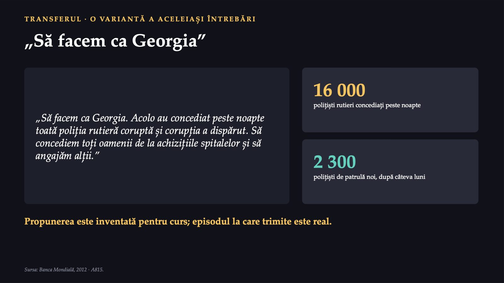
34 / 43Lăsăm spitalul și trecem la o variantă a aceleiași întrebări, la nivelul unei țări. La o conferință despre achizițiile din sănătate, un decident propune: să facem ca Georgia; acolo au concediat peste noapte toată poliția rutieră coruptă și corupția a dispărut; să concediem toți oamenii de la achizițiile spitalelor și să angajăm alții. Propunerea e inventată pentru curs, dar episodul la care trimite este real: peste noapte au fost concediați 16 000 de polițiști rutieri, înlocuiți după câteva luni de 2 300 de polițiști de patrulă nou angajați.
Ce spune cartea despre ea însăși
![BANCA MONDIALĂ, 2012 Ce spune cartea despre ea însăși Descrie reformele reușite în opt domenii ale serviciilor publice, între care poliția de patrulă, vama și registrele publice. 1 Nu evaluează ansamblul reformelor și nu sugerează vreo cauzalitate între reforme și creșterea economică sau rezultatele sociale. 2 Nu tot ce a făcut Georgia poate fi reprodus în alte contexte, deși multe lecții pot fi adaptate. 3 Subliniază voința politică de la cel mai înalt nivel. Sursa: Banca Mondială, 2012 · A814, A816, A817, A818.](diapozitive/C05/035.jpg) 35 / 43
35 / 43În 2012, Banca Mondială a publicat o carte despre reformele anticorupție din serviciile publice ale Georgiei, de după Revoluția Trandafirilor. Cartea descrie opt domenii în care reformele au reușit, între care poliția de patrulă, vama și registrele publice. Spune și ce nu face, iar asta contează mai mult decât episodul: nu evaluează ansamblul reformelor și nu sugerează vreo cauzalitate între reformele anticorupție și creșterea economică sau rezultatele sociale. În prefață, autorii scriu că nu tot ce a făcut Georgia poate fi reprodus în alte contexte, deși multe lecții pot fi adaptate, și subliniază voința politică de la cel mai înalt nivel.
Ce susțin dovezile despre propunerea „să facem ca Georgia”?
![MENTIMETER · VOTUL 3 A TREIA DECIZIE · FĂRĂ AL DOILEA VOT Ce susțin dovezile despre propunerea „să facem ca Georgia”? A Georgia arată că metoda funcționează, deci trebuie aplicată și la noi. B Scorul a urcat mult, dar indicatorul nu arată ce măsură a produs creșterea, iar autorii spun că nu tot se poate transfera: alegem măsuri cu un indicator. C Nu se poate spune nimic: toate scorurile au marjă de eroare. D Concedierea în masă nu e posibilă la noi, deci exemplul nu ne privește. Răspundeți pe telefon, la codul afișat. menti.com anonim, fără cont](diapozitive/C05/036.jpg) 36 / 43
36 / 43A treia decizie, de data aceasta fără al doilea vot. Ați văzut propunerea decidentului și ce spune cartea Băncii Mondiale despre ea însăși. Întrebarea nu este dacă propunerea vă place, ci ce susțin dovezile despre ea. Votați singuri, pe telefon; apoi ne uităm la ce s-a măsurat efectiv.
Ce s-a măsurat efectiv
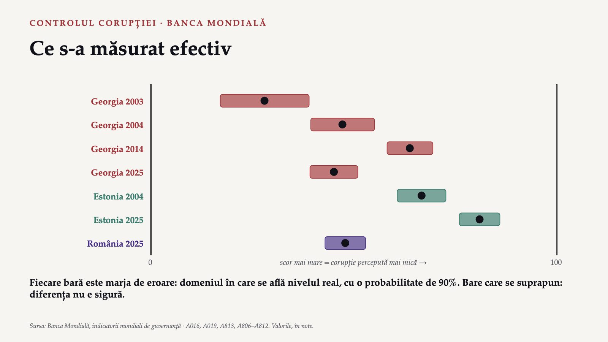
37 / 43Să vedem ce s-a măsurat efectiv. Indicatorul este controlul corupției al Băncii Mondiale, pe care l-ați întâlnit în prima ședință: măsoară percepțiile asupra folosirii puterii publice în beneficiu privat, pe o scală de la 0 la 100, unde un scor mai mare înseamnă o corupție percepută mai mică. Fiecare scor vine cu o marjă de eroare, domeniul în care se află nivelul real cu o probabilitate de 90%. Când barele se suprapun, diferența nu trebuie considerată sigură. Georgia a urcat după 2003 peste marja de eroare, iar până în 2025 a coborât din nou, în jurul nivelului din 2004. România și Georgia, în 2025, se suprapun. Valorile: Georgia, 28,1 în 2003, 47,3 în 2004, 63,9 în 2014 și 45,2 în 2025; Estonia, 66,8 în 2004 și 81,1 în 2025, peste marjă; România, 48,0 în 2025.
Varianta (B)
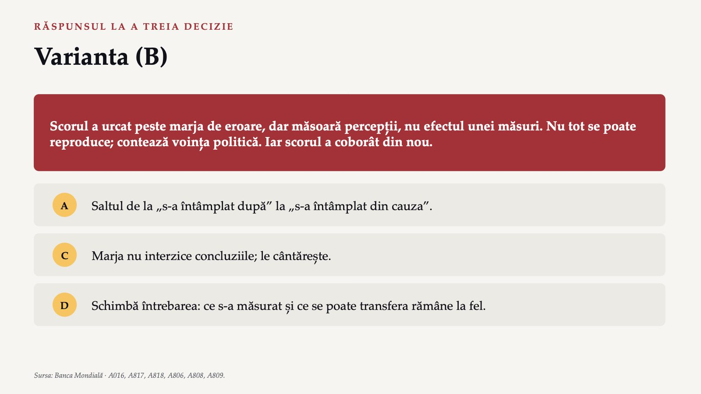
38 / 43Varianta documentată este (B). Scorul Georgiei a urcat mult după 2003, peste marja de eroare. Indicatorul măsoară însă percepția corupției, nu efectul unei măsuri anume; cartea Băncii Mondiale spune că nu tot ce a făcut Georgia poate fi reprodus în alte contexte și subliniază voința politică de la cel mai înalt nivel; iar scorul a coborât din nou până în 2025. Varianta (A) face saltul de la „s-a întâmplat după” la „s-a întâmplat din cauza”: aceeași distanță dintre titlu și design din ședința a patra. Varianta (C) aplică marja prea larg: unele diferențe sunt mai mici decât ea, altele mult mai mari. Varianta (D) schimbă întrebarea. Concluzia cinstită: alegem măsuri pe care le putem verifica, fiecare cu indicatorul ei.
O măsură pentru Spitalul Județean A
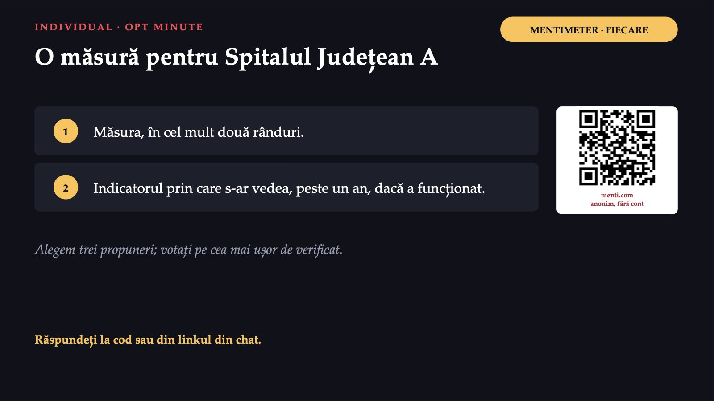
39 / 43Fiecare, pe Mentimeter: propuneți o măsură pentru Spitalul Județean A, în cel mult două rânduri, împreună cu indicatorul prin care s-ar vedea, peste un an, dacă a funcționat. Alegem apoi trei propuneri și votați pe cea mai ușor de verificat.
O măsură numește pe cineva și se poate verifica
![TREI EXEMPLE DE FORMĂ, NU RĂSPUNSUL O măsură numește pe cineva și se poate verifica MĂSURA Prețul pe bucată, publicat periodic, urmărit de consiliul județean INDICATORUL dacă se publică la termen și câte sesizări aduce MĂSURA Cineva desemnat compară declarațiile cu ofertanții, la fiecare procedură INDICATORUL proporția procedurilor cu comparația documentată MĂSURA Un raport anual al cererilor de informații INDICATORUL proporția cererilor rezolvate în termenul legal Diferența dintre o măsură și un comunicat. Sursa: Legea nr. 544/2001; legea achizițiilor publice; Legea nr. 176/2010 · A836, A833, A745, A821.](diapozitive/C05/040.jpg) 40 / 43
40 / 43Trei exemple, ca să vedeți forma, nu ca răspuns la exercițiu. Spitalul publică periodic prețul pe bucată pentru principalele consumabile, iar consiliul județean urmărește publicarea; indicatorul: dacă se face la termen și câte întrebări sau sesizări aduce. La fiecare procedură, o persoană desemnată compară declarațiile de interese ale membrilor comisiei cu firmele participante; indicatorul: proporția procedurilor cu comparația documentată. Spitalul publică o dată pe an câte cereri de informații a primit, câte a rezolvat în termen și câte a refuzat; indicatorul: proporția celor rezolvate în termenul legal. Fiecare numește pe cineva care face ceva și poate fi verificată din afară. Asta e diferența dintre o măsură și un comunicat.
Luni dimineață
 41 / 43
41 / 43Ce faceți diferit de luni. Când vedeți scris, ca în comunicatul Spitalului Județean A, că toate documentele sunt publice, întrebați-vă cine le citește și cine trebuie să răspundă. Când aveți nevoie de o informație de la o instituție publică, faceți-o în scris și notați data înregistrării: de la ea curg termenele. Un refuz fără motiv nu este ultimul cuvânt: aveți reclamația și tribunalul, iar data-limită pentru tribunal o notați de la început. Când cineva vă dă exemplul unei țări care a scăpat de corupție, întrebați de scor, cu marja lui de eroare, și de ce anume a produs schimbarea. Iar când propuneți o măsură, spuneți și cum s-ar vedea dacă a funcționat.
Cazul, termenele, marja de eroare: zece întrebări
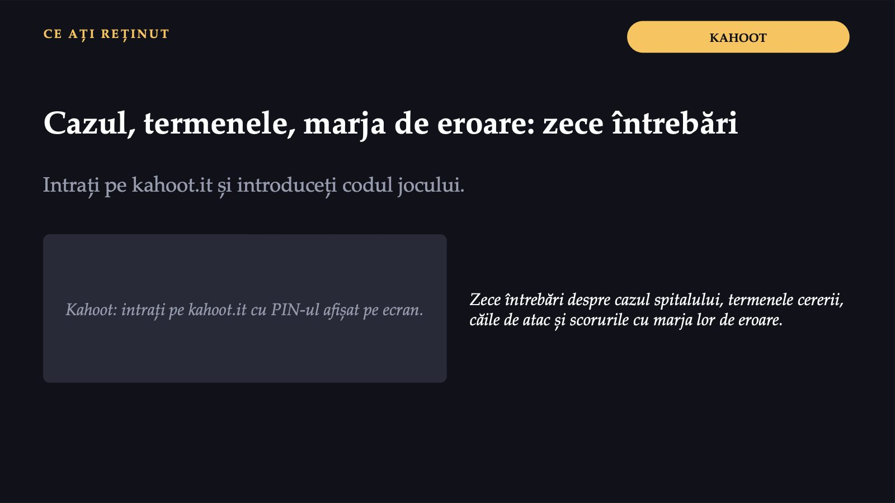
42 / 43Zece întrebări despre ce a rămas din ședință: cazul spitalului, termenele cererii, căile de atac și scorurile cu marja lor de eroare.
Trei întrebări pentru final
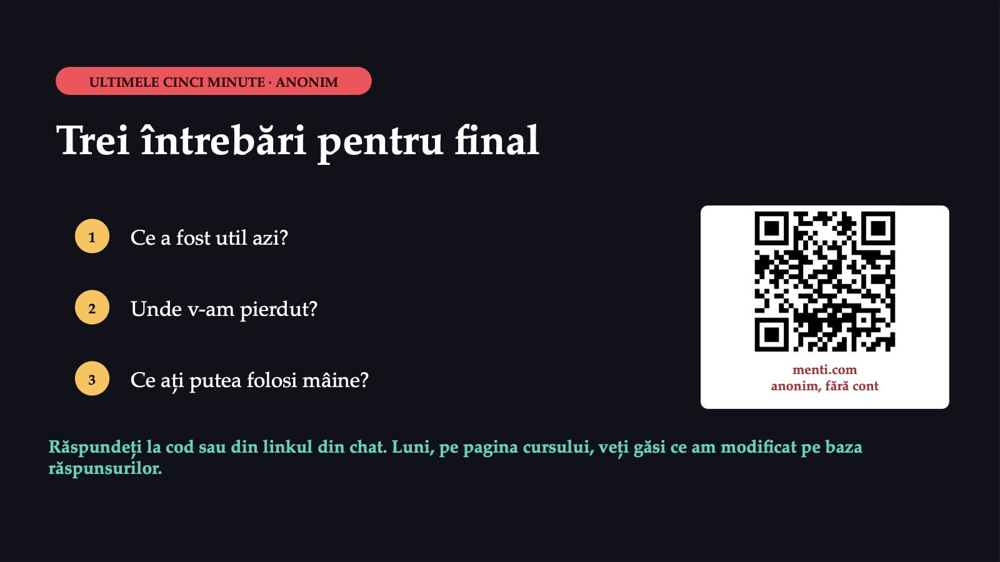
43 / 43Trei întrebări anonime, la codul afișat sau din linkul din chat: ce a fost util azi, unde v-am pierdut și ce ați putea folosi mâine. Luni, pe pagina cursului, veți găsi ce am modificat pe baza răspunsurilor.
Săgeți sau spațiu: navigare · O: vedere de ansamblu · N: notele prezentatorului · F: ecran complet · Esc: închidere